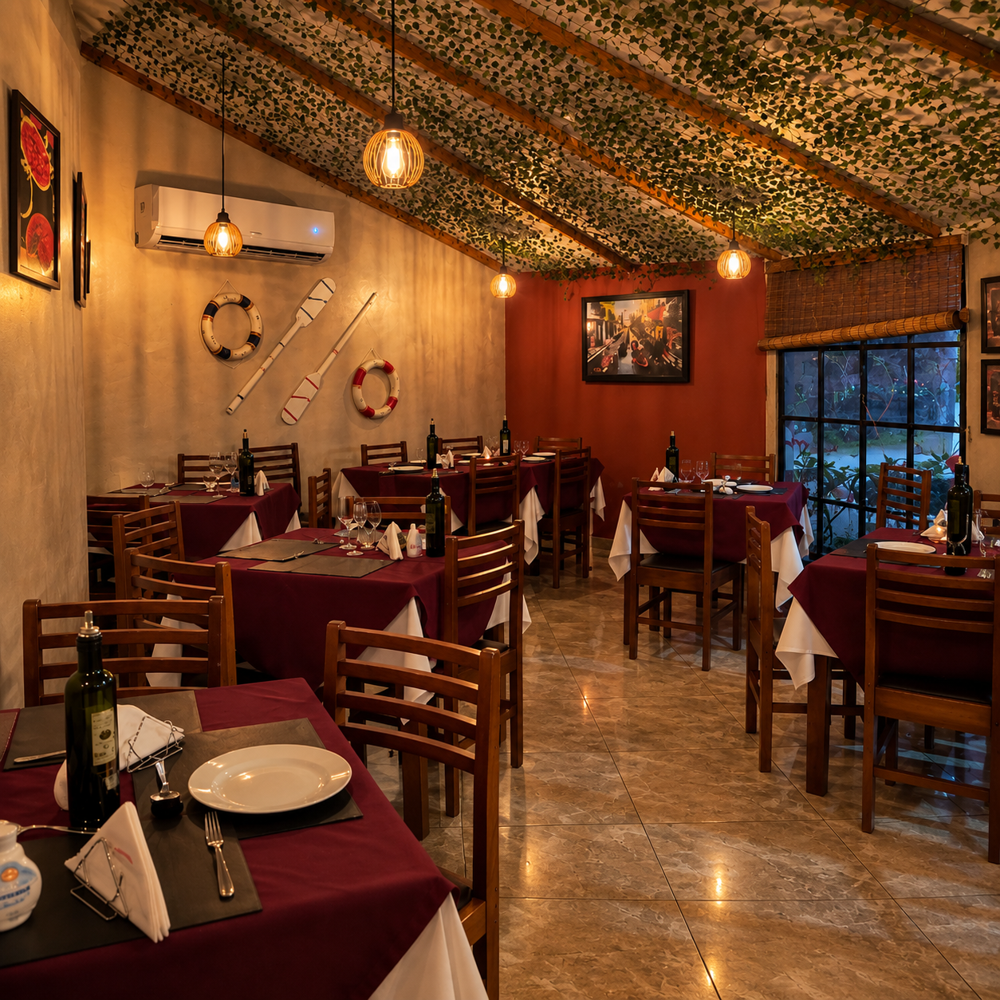
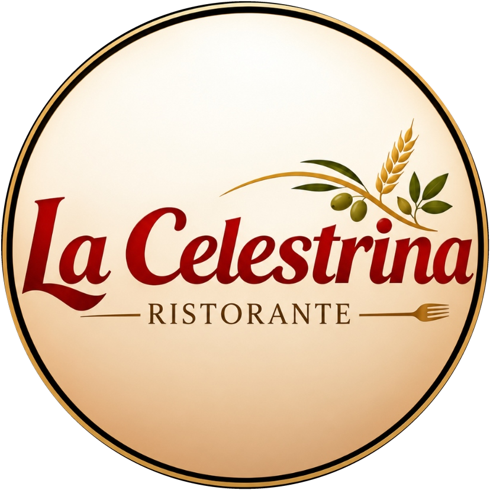
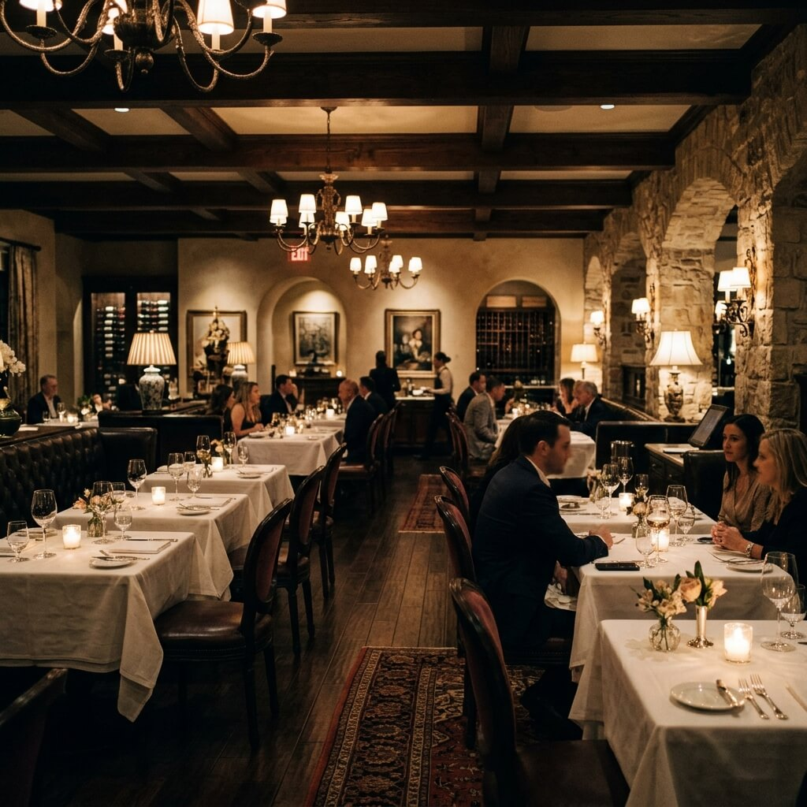
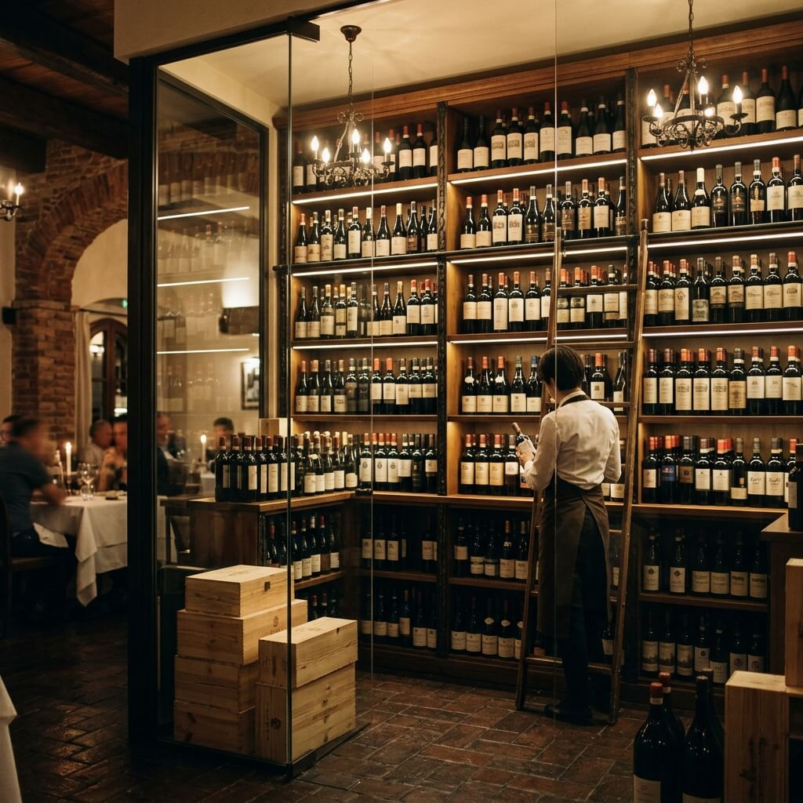
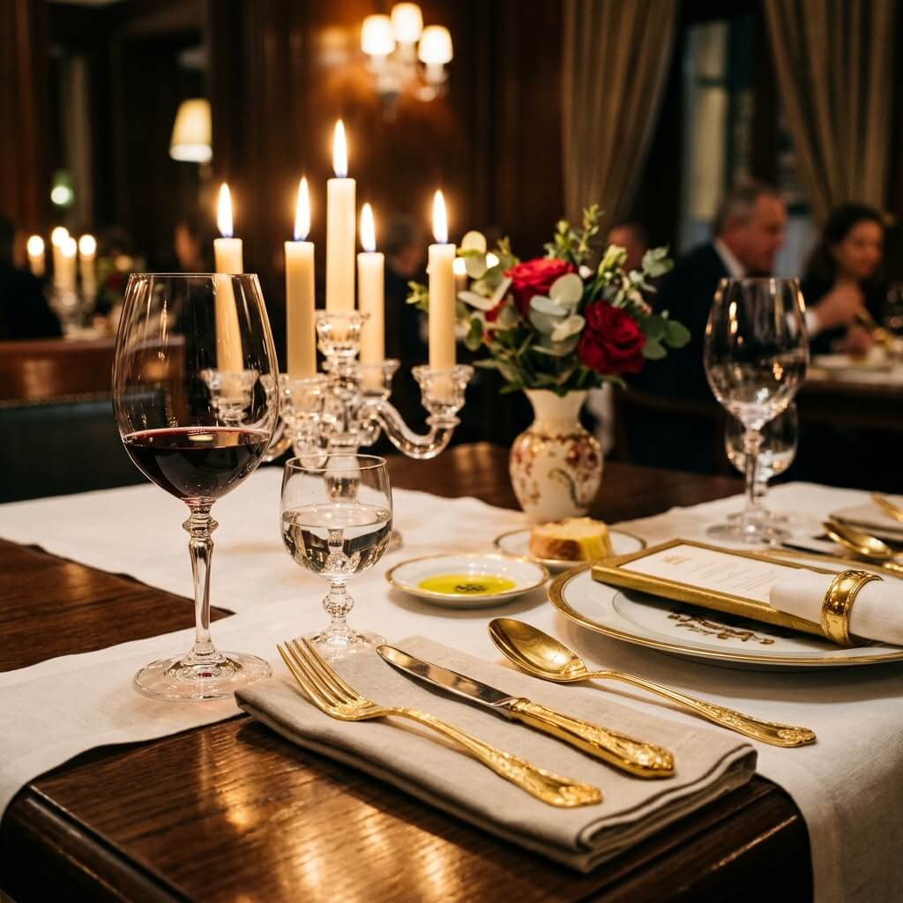
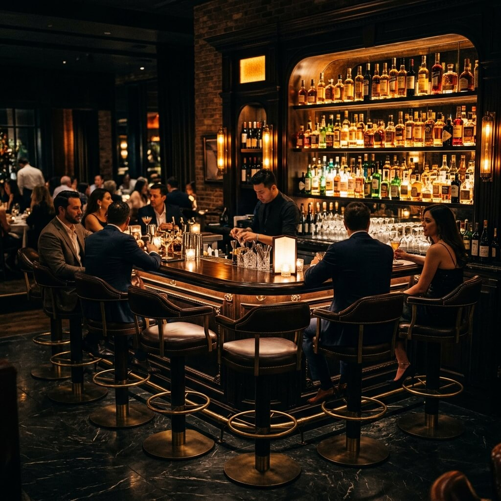

Uma Joia Sem Placa,
Nascida para Encantar.
Cozinha italiana e mediterrânea com alma de família — frutos do mar,
massas artesanais e a história do Chef Osmar em Vilas do Atlântico.

A Nossa História
Uma joia escondida
que virou point
Tudo começou em 2013, quando o chef Osmar Santos decidiu transformar anos de experiência em grandes cozinhas de Salvador em um restaurante só seu — no próprio bairro onde morava. O nome é uma homenagem à sua avó, Dona Celestrina.
O que nasceu como uma joia escondida, sem nem placa na porta, se tornou um dos restaurantes italianos mais queridos da região. Hoje em Vilas do Atlântico, a cozinha segue fiel à mesma filosofia: comida de chef, sofisticada, a preço justo.

Atmosfera
Nosso Salão





A Voz dos Nossos Clientes
O Que Dizem Sobre Nós
"Ambiente agradável, boa comida, preço justo. Uma experiência incrível do início ao fim."
"Sou fã do filé a parmegiana e do risoto de camarão com brie! Tudo sempre perfeito."
"Lugar aconchegante, atendimento nota 1000 e pratos divinos. O verdadeiro sabor da Itália em Vilas."